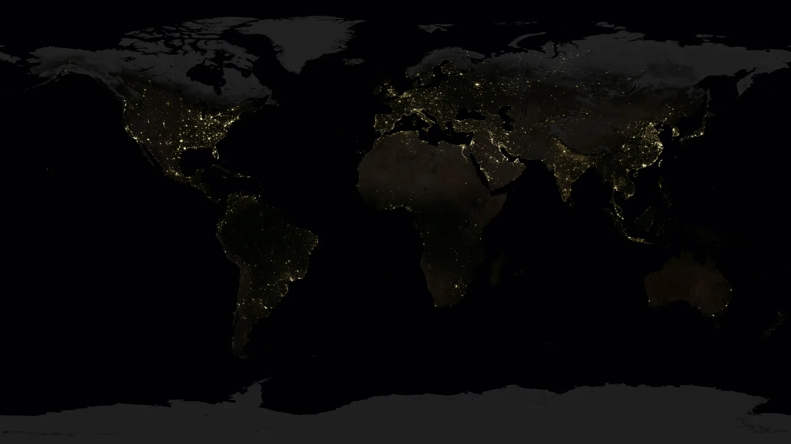

NASA Space Apps Challenge 2026
Hear the planet change.
NASA Earth visualizations turned into sound you can steer. Built for blind and low-vision listeners.

- High notes come from the north
- Right ear is east
- Louder means more
- Timbre says what it is
Four tracks
- Night Lights 2012–2023
- Aerosols
- Lightning from the space station
- Ocean Temperature
Made to work without a screen
Keyboard only, live updates for screen readers, an optional voice guide, and a controller you can feel.
Top is north · right ear is east · louder is more
Sound starts with your first key press.
Now playing
Night Lights 2012–2023
Year 2012 Centre India Ring 1500 km
Save as WAV is not available on the lightning video: it would need every video frame decoded in advance. Tracks 1, 2 and 4 can be saved.
A 28-second tour
The demo plays a fixed scenario with English subtitles on screen. It covers what EarthSonar is and who it is for, India in 2012 and in 2023, aerosols, lightning, and where to find it. Use headphones if you can.
Loading the maps the demo needs.
Press Escape to stop at any time. The demo is the same player as the Jukebox tab, with its timing fixed for recording.